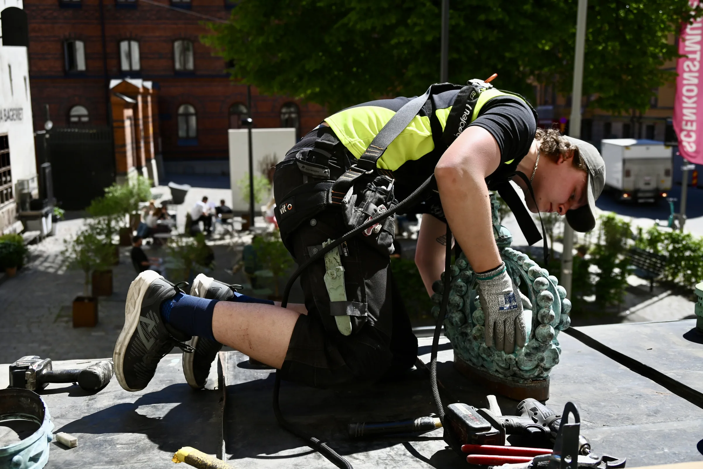
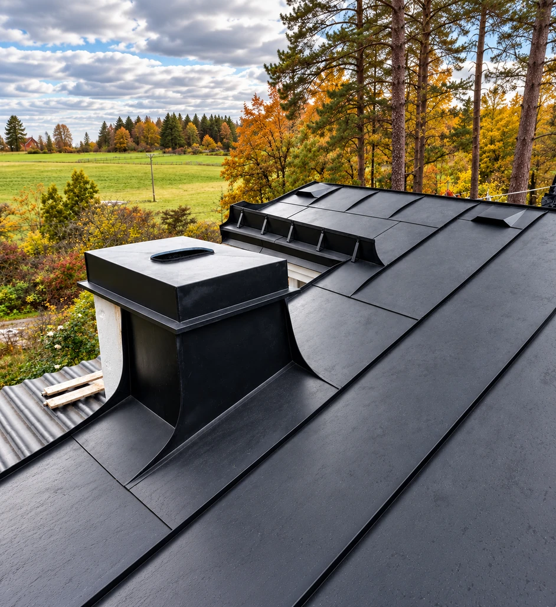
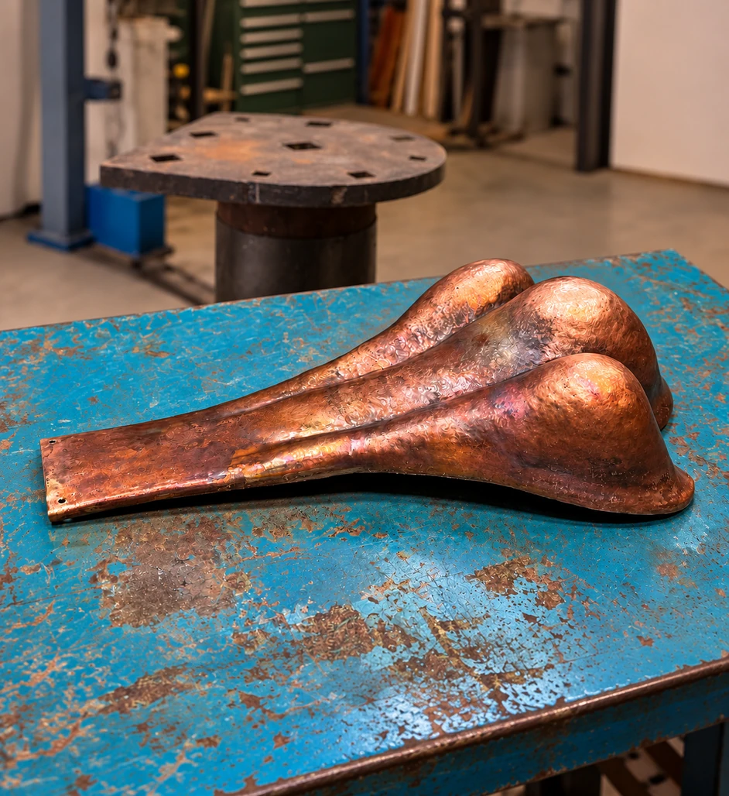
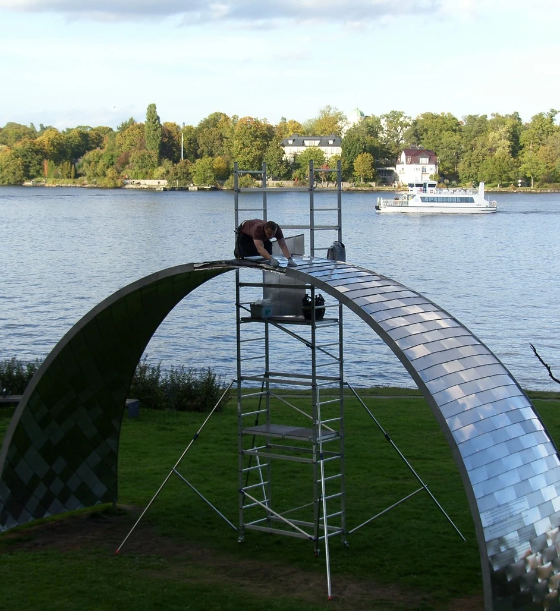
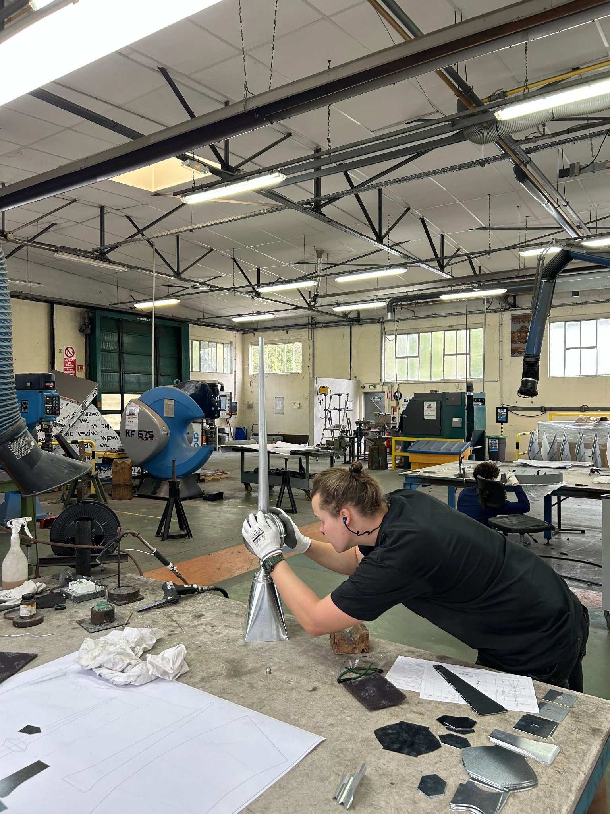
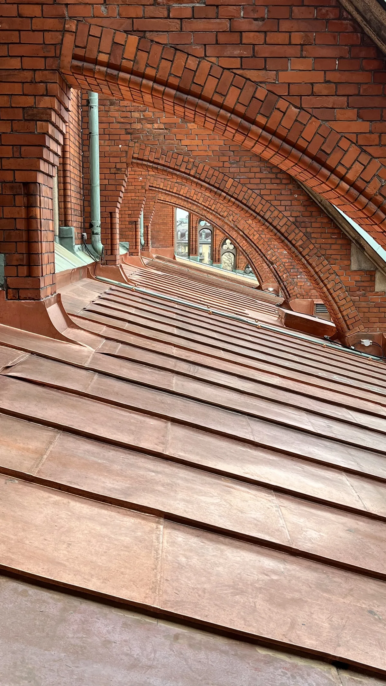

Conny Lundell
Platschef, Kyrkans Byggmästarbolag AB
Mycket kunnig och lösningsorienterad en riktig konstnär med plåt.
St: Johannes Kyrka
Kommande 2027
Direkt kontakt med den som utför arbetet, från offert till faktura.
Kontakta mig →
Mitt löfte
När du anlitar J. Norberg Plåtslageri AB har du direkt kontakt med den som utför arbetet, från offert till faktura. Det betyder att kunskap, erfarenhet och känsla för hantverket följer med genom hela projektet.
Varje arbete utför jag med stor noggrannhet, respekt för det traditionella hantverket och höga krav på kvalitet.

Traditionellt byggnadsplåtslageri med fokus på noggrant utförande, hållbarhet och detaljer.

Tillverkning och bearbetning av koppar för tak, fasader och arkitektoniska detaljer.

Restaurering av äldre och kulturhistoriska byggnader med respekt för originalets uttryck.

Specialanpassade arbeten där traditionellt hantverk möter unika arkitektoniska lösningar.
Arbetssätt
Du berättar vad som behövs. Jag lyssnar och ställer frågorna som avgör rätt lösning.
Jag tittar på byggnaden, underlaget och detaljerna på plats innan något bestäms.
Jag räknar, väljer lösning och lämnar en tydlig offert.
Jag utför arbetet med noggrannhet och respekt för byggnaden, och du har mig som kontakt hela vägen.

Pågående arbete
Just nu arbetar jag med restaureringen av koppardetaljerna på Villa Bergabo på Södra Djurgården. Arbetet omfattar demontering av den befintliga kopparen, renovering och anpassning av underlaget samt återmontering av detaljerna.
Läs mer om Villa Bergabo →
Hantverkaren
Jag heter John Norberg och driver J. Norberg Plåtslageri AB. Efter tio år på Bång & Lewerth, med fokus på restaurering av kulturhistoriskt värdefulla byggnader, driver jag nu eget med samma passion för traditionellt hantverk och hög kvalitet.
Jag kom på andra plats i SM i plåtslageri 2016, har varit ambassadör för PVF och tilldelades 2023 ett stipendium för en utbildningsresa till VMZINC i Frankrike.
Några nämnvärda projekt jag haft förtroendet att jobba på som anställd på Bång & Lewerth är Högalidskyrkan, S:t Johannes kyrka, Stockholms stadshus, Utrikesdepartementet, Riddarholmskyrkan och Engelbrektskyrkan.
Mitt mål är att föra det traditionella hantverket vidare och ta mitt mästarbrev, planerat till början av 2027.

Hör av dig
Har du ett projekt inom plåt, koppar eller restaurering? Kontakta mig gärna för att diskutera arbetet.